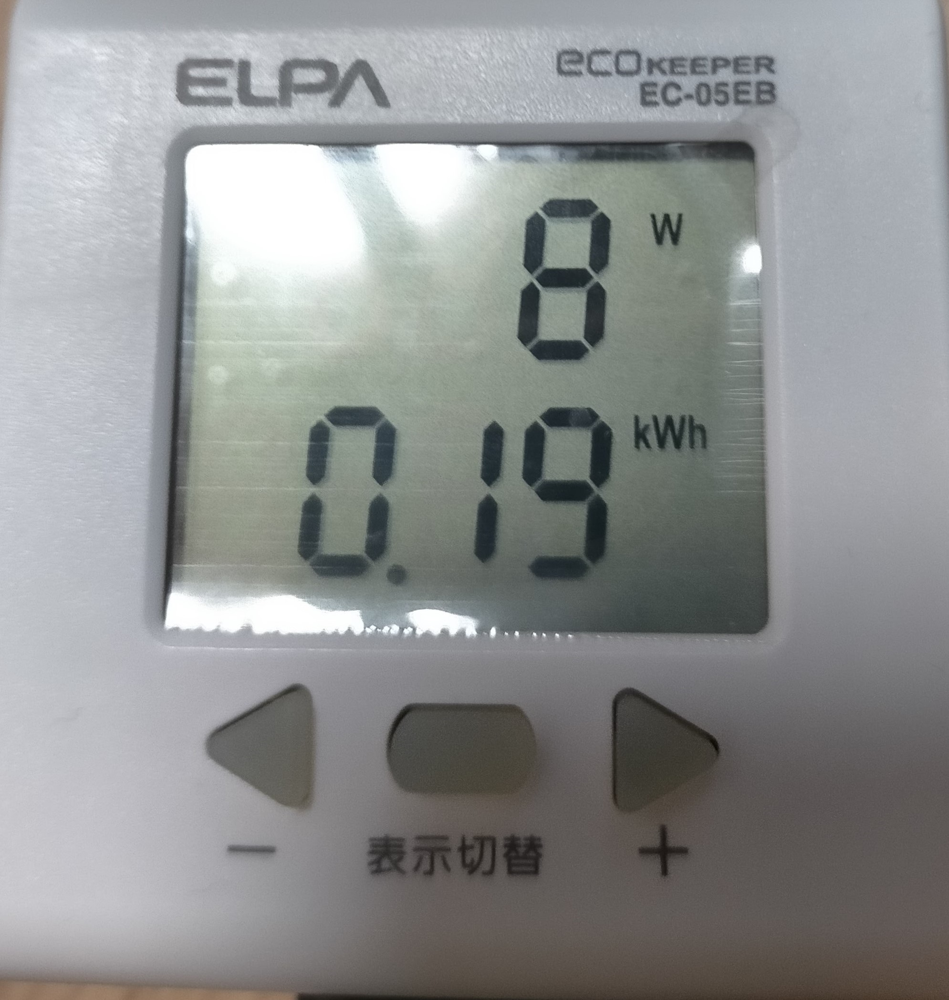
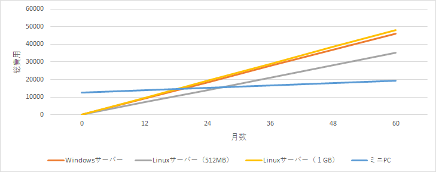

MT4で自動売買を行っている人は、24時間稼働させる方法について一度は悩むと思います。
私もこの問題に長年悩み、以下のような方法を試してきました。
- WindowsサーバーのVPSを借りる
- Linuxサーバーに Wine を入れて MT4 を動かす
- 自宅PCを常時稼働させる
そして様々な方法を比較した結果、ミニPCを買って自宅で24時間稼働させるのが最も安くて自由度が高いという結論に至りました。
ミニPCのメリット1：とにかく安い
私が購入したのは BMAX のミニPC（Celeron / 4GB RAM / 64GB SSD） です。
スペックは最低クラスですが、MT4専用機としては全く問題ありません。
購入価格はセールで 12,749円。
さらに、このミニPCの熱設計電力（TDP）は 8W と非常に低く、
24時間稼働させても電気代は以下のとおりです。
1日の消費電力量は、
[ 8{W} * 24{時間} = 192{Wh} = 0.192{kWh} ]
これに 1kWh あたり 28.5円 を掛けると、
[ 0.192{kWh} * 28.5{円} = 5.472{円} ]
つまり、1日の電気代は約5.47円です。
- 平日20日稼働なら
[ 5.472{円} * 20{日} = 109.44{円} ]
→ 約109円/月
- 31日フル稼働なら
[ 5.472{円} * 31{日} = 169.632{円} ]
→ 約170円/月
実際に電気代を測定した写真がこちらです。

測定値は 0.19kWh でした。
[ 0.19{kWh} * 28.5{円} = 5.415{円} ]
つまり、実測でも 1日の電気代は約5.42円 となり、
計算値（約5.47円）とほぼ一致しています。
VPSとのコスト比較
| 項目 | Windowsサーバー（※1） | Linuxサーバー（※2） | ミニPC自宅運用（※3） |
|---|---|---|---|
| 初期費用 | 0円 | 0円 | 12,749円 |
| 月額 | 770円 | 586円（512MB）801円（1GB） | 約109〜170円 |
（※1） KAGOYA CLOUD VPS Windows Server（1コア/1GB）
（※2） ConoHa VPS（1年契約）
（※3） ミニPC本体のみ。ディスプレイ等は別途必要。
図で比較すると一目瞭然

運用期間が長いほど、ミニPCのコストメリットが大きくなります。
私は最低でも 2年、できれば5年 稼働させる予定です。
ミニPCのメリット2：自由度が高い
Linuxサーバーで Wine を使って MT4 を動かしていた頃は、
- メモリ不足で複数EAが回せない
- メンテナンスで勝手に再起動される
- Webサーバーと併用すると不安定
などの問題がありました。
一方、ミニPCは以下の点が優秀です。
- メモリ4GBで複数EAが余裕
- 勝手に再起動されない
- 日常使いもできる
- リモート接続不要で操作性が良い
ミニPCのデメリット1：ファンの音
ミニPCは静音性が高いとはいえ、小さなファン音はします。
就寝時や勉強時は少し離れた場所に置いています。
ミニPCのデメリット2：火事の心配
購入前に最も心配したのが 火事のリスク です。
夏場は熱暴走が怖いので、私は USB扇風機で冷却 しています。
どうしても心配なら、
- 夏だけVPSを使う
- EA稼働を一時停止する
など柔軟に対応できます。
あくまで趣味でFX自動売買をしているので、私はゆるく運用しています。
まとめ
MT4を24時間稼働させる方法としては、
ミニPCが最も安く、自由度が高く、長期運用に向いている と感じています。
- 初期費用はかかる
- ファン音や火事の心配はある
それでも、
コスト・安定性・自由度のバランスが最強 なので、私はミニPCをおすすめします。